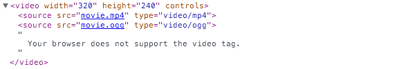
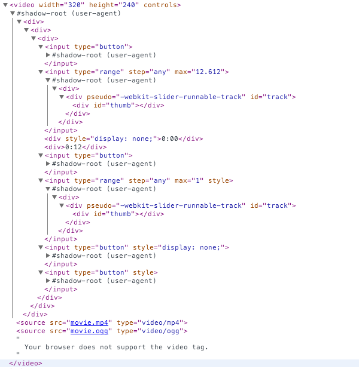
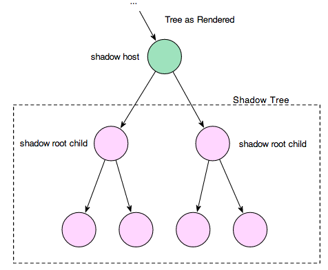
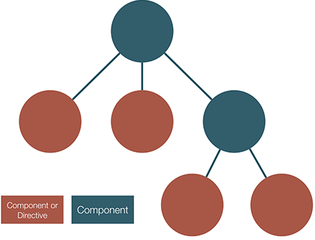

Polymer
Building modern front-end applications
#UseThePlatform
Agenda
- Chapter 0. Introduction
- Chapter 1. Web Components
- Chapter 2. Setups
- Chapter 3. Creating Elements
- Chapter 4. Using Elements
- tbd... ;-)
Rules of engagement
- Training hours
- Lunches
- Phones
- Evaluation
Have fun!
Polymer introduction
What is Polymer
From the site:
The Polymer Project helps you deliver amazing user experiences by unlocking the full potential of the web platform.
Use the Polymer library to
- make the most of Web Components, a powerful new platform feature for extending HTML and componentizing your apps. Use the Polymer App Toolbox to
- build cutting-edge Progressive Web Apps that load quickly, respond instantly and work from anywhere.
What is Polymer
Polymer is built upon Web Component technology Web Components:
Web Components are a set of features added by W3C to the HTML and DOM specs that allow for the creation of reusable widgets or components in web documents and web applications.
Polymer provides
Polymer is a combination of
- A toolbox of components
- A polyfill for older browsers (webcomponents_lite.js)
- Not exactly part of Polymer, should vanish in time..
- A framework that provides
- Element Creation
- Data Binding
- More..
So Polymer works everywhere
Polymer Elements
Polymer sits on top of Web Components. Elements can be anything
- An API set
- An entire application
- A Visual/Non Visual building block
- Even data...
Polymer Now
- Polymer is written and maintained by Google
- Polymer has version 1.6 as of this moment
- Polymer is located at: https://www.polymer-project.org/1.0/
Polymer 2.0 is in beta https://www.polymer-project.org/1.0/blog/2016-09-09-polymer-2.0.html
Microsoft is developing their own version
- x-tags http://x-tag.github.io/
Demo time!
Polymer site and catalog
Web Components
Web Components
Encapsulation is one of the pillars on which the Object Oriented Programming paradigm was founded and is normally used to restrict the internal representation of an object from the outside world.
Web Components
Web Components consist of 4 main features from HTML5:
- Custom Elements
- APIs to define new HTML elements
- Shadow DOM
- Encapsulated DOM and styling, with composition
- HTML Imports
- Importing HTML documents into other documents
- HTML Templates
- The template tag, insert chunks of DOM
These features can be used separately or all together
Web Components
You probably already use and know web components syntax For instance: The HTML5 the <video> tag is also a web component

Web Components
But the video tag is actually 
Web Components
Examples of web components
Web Components
You can create your own
<slide-show transition="fade">
<slide src="slideone.jpg" thumb="slideone_thumb.jpg" caption="Look at this image">
<slide src="slidetwo.jpg" thumb="slidetwo_thumb.jpg" caption="Look at this other image">
</slide-show>
Create your own elements
What makes a web component again?
- Custom Elements
- Shadow DOM
- Templates
- HTML Imports
Custom Elements
Define the public part of your component
For example
<hello-world></hello-world>
Custom Elements
To define a new HTML element we need the power of JavaScript!
The customElements global is used for defining
custom element.
Call customElements.define()
Give class API
Custom Elements
An Example
class AppDrawer extends HTMLElement {...}
window.customElements.define('app-drawer', AppDrawer);
Usage
<app-drawer></app-drawer>
Custom Elements
Use the class to create a public JavaScript API for your tag.
Extending the example
class AppDrawer extends HTMLElement {
get open() { return this.hasAttribute('open'); }
set open(val) {
if (val) { this.setAttribute('open', '');}
else { this.removeAttribute('open'); } this.toggleDrawer();
}
constructor() { super(); this.addEventListener('click', e => { this.toggleDrawer();}); }
toggleDrawer() { ... }
}
customElements.define('app-drawer', AppDrawer);
Demo time!
Demo 1. Custom Elements
Shadow DOM
Take all code that doesn't need to be seen during markup placement and obscures it in Shadow DOM
- Each instance is self contained
- Styling and scripts inside won't effect anything on the page.
- CSS and JavaScript elsewhere won't effect your web component
- Except for style hooks to allow external CSS targeting
Shadow DOM
How to use
<div id="host"></div>
<script>
var shadow = document.querySelector('#host').createShadowRoot();
shadow.innerHTML = '<span>Host node</span>';
</script>
Shadow DOM
What you gain?
Encapsulation of
- Styles
- DOM Elements
- Scripts
Shadow Host & Shadow Root
- Shadow Host
- DOM element hosting the Shadow DOM subtree
- Shadow Root
- root of the DOM subtree containing the shadow DOM nodes
- creates the boundary between normal DOM nodes and Shadow DOM nodes
- Shadow DOM
- allows for multiple DOM subtrees to be composed into one larger tree
- next slide shows concept
- Shadow Boundary
- The separation between normal DOM world and Shadow DOM world
- Scripts from either side cannot cross boundary
Shadow Host & Shadow Root

Shadow Host & Shadow Root

Demo time!
Demo 2. Shadow dom
Templates
template (n) - A document or file having a preset format, used as a starting point for a particular application so that the format does not have to be recreated each time it is used.
So we can declare a piece of HTML/Script/Style inside of a tempate for later or repetetive use
Templates
To use a template we use the template tag
<template id="mytemplate">
.... html/script ...
</template>
Templates
A few important characteristics of Templates
- Its content is effectively inert until activated
Your markup is hidden DOM and does not render.
Templates
- Any content within a template won't have side effects.
Script doesn't run, images don't load, audio doesn't play, ...until the template is used.
Templates
- Content is considered not to be in the document.
Using document.getElementById() or querySelector() in the main page won't return child nodes of a template.
Templates
- Templates can be placed anywhere inside of
head,body, orframesetand can contain any type of content which is allowed in those elements.
It can also be placed as a child of table or select
<table>
<tr>
<template id="cells-to-repeat">
<td>some content</td>
</template>
</tr>
Templates
To use a template, you need to activate it. Otherwise its content will never render. The simplest way to do this is by creating a deep copy of its .content using document.importNode().
The .content property is a read-only DocumentFragment containing the guts of the template.
Templates
var t = document.querySelector('#mytemplate');
// Populate the src at runtime.
t.content.querySelector('img').src = 'logo.png';
var clone = document.importNode(t.content, true);
document.body.appendChild(clone);
After stamping out a template, its content "goes live". In this particular example, the content is cloned, the image request is made, and the final markup is rendered.
Example
Here is a full example
<button onclick="useIt()">Use me</button>
<div id="container"></div>
<script>
function useIt() {
var content = document.querySelector('template').content;
// Update something in the template DOM.
var span = content.querySelector('span');
span.textContent = parseInt(span.textContent) + 1;
document.querySelector('#container').appendChild(
document.importNode(content, true));
}
</script>
<template>
<div>Template used: <span>0</span></div>
<script>alert('Thanks!')</script>
</template>
Demo time!
Demo 3. Templates
Template and Shadow DOM
Lets combine the template and the shadow DOM
<template>
<style>...</style>
<div>...</div>
</template>
<div id="host"><p>...</p></div>
<script>
var shadow = document.querySelector('#host').createShadowRoot();
shadow.appendChild(document.querySelector('template').content);
</script>
HTML Imports
How do we include HTML. Here's your options:
iframe- tried and true but heavy weight. An iframe's content lives entirely in a separate context than your page.AJAX- Need JS to load HTML? That doesn't seem right.CrazyHacks- embedded in strings, hidden as comments (e.g.script type="text/html").The web's most basic content, HTML, requires the greatest amount of effort to work with
HTML Imports
A way to include HTML documents in other HTML documents
An import can also include CSS, JavaScript, or anything else an .html file can contain. Ideal for providing libraries and components.
How does it work
Include an import on your page by declaring a link rel="import":
<head>
<link rel="import" href="/path/to/imports/stuff.html">
</head>
Feature detection and support
To detect support, check if .import exists on the element
function supportsImports() {
return 'import' in document.createElement('link');
}
if (supportsImports()) {
// Good to go!
} else {
// Use other libraries/require systems to load files.
}
Load/error events
The link element fires a load event when an import is loaded
successfully and onerror when the attempt fails (e.g. if the resource 404s).
<script>
function handleLoad(e) {
console.log('Loaded import: ' + e.target.href);
}
function handleError(e) {
console.log('Error loading import: ' + e.target.href);
}
</script>
<link rel="import" href="file.html"
onload="handleLoad(event)" onerror="handleError(event)">
Using the content
! Including an import on a page doesn't add the content. It means
parser, go off an fetch this document so I can use it.
- The content of an import is called an import document.
- To access the content of an import, use the link element's .import property:
var content = document.querySelector('link[rel="import"]').import;
Scripting in imports
- Imports are not in the main document. You get to maindocument using
document. - A reference to the import doc is maintained in 'ownerDocument'
Example document reference
<link rel="stylesheet" href="http://www.example.com/styles.css">
<link rel="stylesheet" href="http://www.example.com/styles2.css">
<script>
// importDoc references this import's document
var importDoc = document.currentScript.ownerDocument;
// mainDoc references the main document (the page that's importing us)
var mainDoc = document;
// Grab the first stylesheet from this import, clone it, append it.
var styles = importDoc.querySelector('link[rel="stylesheet"]');
mainDoc.head.appendChild(styles.cloneNode(true));
</script>
Dependency management
- Loading Javascript more than once per page causes errors.
- HTML Imports can be used to manage dependencies.
By wrapping libraries in an HTML Import, you automatically de-dupe resources.
- The document is only parsed once.
- Scripts are only executed once.
Concatenate imports
If you have many top-level import links, consider combining them into a single resource and importing that file!
Vulcanize is an npm build tool from the Polymer team that recursively flattens a set of HTML Imports into a single file.
Think of it as a concatenation build step for Web Components.
Async importing
- Imports block rendering of the main page.
- This is similar to what do.
- Imports behave similarly because they can contain stylsheets.
To be completely asynchronous and not block the parser or rendering, use the async attribute:
<link rel="import" href="/path/to/import_that_takes_5secs.html" async>
Importing with scripts
- Imports don't block parsing of the main page.
- Scripts inside imports are processed in order but don't block the importing page.
- Scripts on the main document do block parsing..
Import things to remember
- An import's mimetype is text/html.
- Resources from other origins need to be CORS-enabled.
- Imports from the same URL are retrieved and parsed once.
- Scripts in an import are processed in order, but do not block the main document parsing.
Demo time!
Demo 4. HTML Imports
Lab time!
create a web component
Polymer Setup
Polymer Setup
Polymer exists totally client-side, so no complex setup. We just need the Polymer HTML includes...
To get these, we can use:
- CDN
- Bower
- YO/Yeoman
- Polymer-CLI
CDN
The HTML files that contain Polymer can be obtained from a CDN
- CDN stands for Content Deployment Network
- The polymer lib is located at this URL
https://cdn.rawgit.com/download/polymer-cdn/1.5.0/lib/polymer/polymer.html
In general, given an element named my-cool-element, the CDN url for it will be:
https://cdn.rawgit.com/download/polymer-cdn/1.5.0/lib/my-cool-element/my-cool-element.html
CDN Pros and Cons
- CDN imports are easy
- CDN imports work on collaboration platforms like JSFiddle, CodePen, etc..
Does not require anything besides an HTML editor
The CDN can be very slow!
- CDN imports are not vulcanized
Bower
To get the polymer HTML pages, type:
npm install bower -g
and then type
bower install polymer --save
Wait for the installation to complete.. You now can create polymer apps..
Bower Pros and Cons
- Simple setup and install
- Downloads just whats needed
Imports can be vulcanized
Bower has no scaffolding for applications, elements and tests
- Requires NodeJS
Yo/Yeoman
To install polymer and scaffold applations and elements you can use YO/Yeoman.
To install Yo/Yeoman, type
npm install yo generator-polymer -g
To create a polymer application type
yo polymer
To create a polymer element inside the application, type
yo polymer:el
Yo Pros and Cons
- Generates Applications, Elements and Tests
Known Scaffolding tool for NodeJS
Uses Gulp as build tool
- Requires NodeJS
Polymer-cli
To install polymer and scaffold applations and elements you can use Polymer-CLI.
To install Polymer-cli, type
npm install polymer-cli -g
To create a polymer application type
polymer init
Choose to create an element or application
Polymer-cli Pros and Cons
- Scaffolds Applications, Elements and Tests
- Is Polymer aware and hosts elements correctly
Has support for linting, deploying, testing and serving apps.
Again Another tool
- Requires NodeJS
Demo time!
Demo 1. Setups
Lab time!
Testing Setups
Creating Elements
Creating Elements
Requirements of an element
- The custom element must have a - (dash)
- The element has to be register with Polymer
Anatomy of an element
Elements can be writter pure imperative. Typically an element definition has
- an imperative part
- call to Polymer({...})
- a declarative part.
- the 'dom-module' element.
The parts of an element's definition may be placed in the same html file or separate files.
Pure imperative element
MyElement = Polymer({
is: 'my-element',
created: function() {
this.textContent = 'My element!';
}});
// create an instance with createElement:
var el1 = document.createElement('my-element');
// ... or with the constructor:
var el2 = new MyElement();
Pure imperative element
You can use factoryimpl for constructor fine-tuning:
MyElement = Polymer({
is: 'my-element',
factoryImpl: function(foo, bar) {
this.foo = foo;
this.configureWithBar(bar);
},
configureWithBar: function(bar) { ...}
});
var el = new MyElement(42, 'octopus');
Pure imperative element
Some notes: The factoryImpl method
- only invoked when you create an element using constructor.
- not called if the element is
- created from markup by the HTML parser,
- created using document.createElement.
- called after the element is initialized
Typical elements
Typical Polymer elements have
- imparive part -> code
- declarative part -> template and style
These elements are auto registered
Imperative part
The imperative part registers the element with its API with Polymer
<dom-module id='my-element'>
<script>
Polymer({
is:'my-element',
properties:{...}
});
</dom-module>
Declarative part
The declarative part of an element has the following template
<dom-module id="icon-toggle">
<template>
<style>
:host { display: inline-block; }
</style>
<!-- local DOM goes here -->
<span>Not much here yet.</span>
</template>
</dom-module>
Demo time!
Demo 1. Hello world element
Declarative part
- The 'dom-module' tag wraps the local DOM definition.
- The id attribute shows that this module is called icon-toggle.
- The 'template' defines the local DOM structure and styling.
- The 'style' element define styles scoped to the local DOM.
- The :host pseudo-class matches the element defined.
What is the local DOM?
Local DOM
- Local DOM
- DOM thats independent from the 'normal' DOM
- Implemented as Shadow DOM
- Implemented as Shady DOM (custom implementation)
- Light DOM
- the 'normal' DOM
Polymer will automatically clone the template's contents into the element's local DOM.
Currently Polymer uses shady DOM by default on all browsers.
Defining properties
Any property that's part of your element's public API should be declared in the properties object.
The properties object can be used to specify:
- Property type.
- Default value.
- Property change observer.
- Read-only status.
- Two-way data binding support.
- Computed property.
- Property reflection to attribute.
Example Element Properties
Polymer({
is: 'x-custom',
properties: {
user: String,
isHappy: Boolean,
count: {
type: Number,
readOnly: true,
notify: true
}
},
ready: function() {
this.textContent = 'Hello World, I am a Custom Element!';
}
});
Property options
| Key | Details |
|---|---|
| type | Attribute type, used for deserializing from an attribute. |
| value | Default value for the property |
| reflectToAttribute | Set to true to cause the corresponding attribute to be set on the host node when the property value changes |
| readOnly | If true, the property can't be set directly by assignment or data binding |
Property options continued..
| Key | Details |
|---|---|
| notify | If true, the property is available for two-way data binding |
| computed | The method is invoked to calculate the value whenever any of the argument values changes |
| observer | The value is interpreted as a method name to be invoked when the property value change |
Computed properties
Computed properties are
- virtual properties whose values are calculated from other properties
- provided as a string with dependent properties as arguments in parenthesis
- not invoked until all dependent properties are defined The function will be called once for any observable change to the dependent properties.
Example of a computed property
<dom-module id="x-custom">
<template><span>{{fullName}}</span></template>
<script>
Polymer({ is: 'x-custom',
properties: {
first: String,
last: String,
fullName: {
type: String,
computed: 'computeFullName(first, last)'
}
},
computeFullName: function(first, last) {
return first + ' ' + last;
}});
</script>
</dom-module>
Instance methods
Polymer elements can contain methods
- private methods have leading underscore
- public methods have not
Register your methods on the prototype
Instance methods
Example private and public methods
Polymer({
is: 'cat-element',
_says: 'meow',
speak: function() {
console.log(this._says);
}
});
Instance methods
Invoke methods on the element
var cat1 = document.querySelector('cat-element');
cat1.speak();
var cat2 = document.createElement('cat-element');
cat2.speak();
Built-in methods
All Polymer elements inherit from Polymer.Base, which provides useful convenience functions to use
- $$(selector)
- Returns first node in local DOM that matches selector.
- fire(type, [detail], [options])
- Fires a custom event. The options object can contain
the following properties:
- node -> Node to fire the event on
- bubbles -> Whether the event should bubble
- cancelable -> Whether the event can be canceled with preventDefault.
- Fires a custom event. The options object can contain
the following properties:
More Built-in methods
There are even more
| Category | Method |
|---|---|
| Async and debounce | async, cancelAsync, debounce, cancelDebouncer,.. |
| Class and attribute manipulation | toggleClass, toggleAttribute,.. |
| CSS Transforms | transform, translate3d |
| Imports and URLs | importHref, resolveURL |
More info here: https://www.polymer-project.org/1.0/docs/devguide/instance-methods
Automatic Node Finding
Nodes specified in template with an id is stored on the this.$ hash by id.
<template>
Hello <span id="name"></span>!
</template>
<script>
Polymer({
is: 'x-custom',
ready: function() {
this.$.name.textContent = this.tagName;
}});
</script>
Statically created instance nodes only!
Automatic Node Finding
- For locating dynamically-created nodes, use the $$ method
- this.$$(selector)
- returns first node in local DOM that matches selector
- this.$$(selector)
- $$ is alias for Polymer.dom(this.root).querySelector():
Element events
A Polymer element can
- subscribe to events from the local DOM
- fire custom events
Example events
<dom-module id="x-custom">
<template>
<div>I will respond</div>
<div id="special">I am special!</div>
</template>
<script>
Polymer({ is: 'x-custom',
listeners: {
'tap': 'regularTap',
'special.tap': 'specialTap'},
regularTap: function(e) {
alert("Thank you for tapping");},
specialTap: function(e) {
alert("It was special tapping");}
});
</script>
</dom-module>
Annotated event listener example
<dom-module id="x-custom">
<template>
<button on-tap="handleTap">Kick Me</button>
</template>
<script>
Polymer({ is: 'x-custom',
handleTap: function() {
alert('Ow!');
}});
</script>
</dom-module>
Imperatively add and remove listeners
Use automatic node finding and the convenience methods listen and unlisten.
this.listen(this.$.myButton, 'tap', 'onTap');
this.unlisten(this.$.myButton, 'tap', 'onTap');
The listener callbacks are invoked with this set to the element instance.
Custom events
- To fire a custom event use the fire method
- You can pass in arguments
Example custom event
<dom-module id="x-custom">
<template>
<button on-click="handleClick">Kick Me</button>
</template>
<script>
Polymer({ is: 'x-custom',
handleClick: function(e, detail) {
this.fire('kick', {kicked: true});
}
});
</script>
</dom-module>
<x-custom></x-custom>
Event retargeting
- change an event's target as it bubbles up
- that target is always in the same scope as the receiving element
(For example, for a listener in the main document, the target is an element in the main document, not in a shadow tree.)
Event retargetting
- Use Polymer.dom(event) to get normalized event object that provides equivalent target data on both shady DOM and shadow DOM.
Normalized event has the following properties
- rootTarget: The original or root target
- localTarget: Retargeted event target
- path: Array of nodes through which event will pass
Example event retargetting
the element
<dom-module id="event-retargeting">
<template>
<button id="myButton">Click Me</button>
</template>
<script>
Polymer({
is: 'event-retargeting',
listeners: {
'click': 'handleClick',
},
handleClick: function(e) {
console.info(e.target.id + ' was clicked.');
}
});
</script>
</dom-module>
Example event retargetting
<event-retargeting></event-retargeting>
<script>
var el = document.querySelector('event-retargeting');
el.addEventListener('click', function(){
var normalizedEvent = Polymer.dom(event);
// logs #myButton
console.info('rootTarget is:', normalizedEvent.rootTarget);
// logs the instance of event-targeting that hosts #myButton
console.info('localTarget is:', normalizedEvent.localTarget);
// logs [#myButton, document-fragment, event-retargeting,
// body, html, document, Window]
console.info('path is:', normalizedEvent.path);
});
</script>
Demo time!
Demo 2. Building an API
Lab time!
Testing Setups
DOM distribution
Composition of element's light DOM with its local DOM
- Content Element
- provides insertion point
- supports select attribute
<template>
<header>Local dom header followed by distributed dom.</header>
<content select=".content"></content>
<footer>Footer after distributed dom.</footer>
</template>
Work with local DOM
Polymer element this.root is the root of local DOM tree.
// Append to local DOM
var toLocal = document.createElement('div');
Polymer.dom(this.root).appendChild(toLocal);
You can use the automatic node finding feature to locate local DOM nodes:
var item = document.createElement('li');
Polymer.dom(this.$.list).appendChild(item);
Work with light DOM children
Access light DOM children
Polymer.dom(this).children
Polymer.dom(this).getEffectiveChildren().length;
You can think of getEffectiveChildren as a composition-friendly version of children. What does this mean?
Work with the light DOM Childen
Suppose we had this:
<simple-carousel>
<img src="one.jpg">
<img src="two.jpg">
<simple-carousel>
Then we can do this:
attached: function() {
this.childCount = Polymer.dom(this).children.length;
}
Work with the light DOM Children
This does not work:
<popup-carousel>
<img src="one.jpg"><img src="two.jpg">
</popup-carousel>
<dom-module id="popup-carousel">
<template>
<simple-carousel><content></content></simple-carousel>
</template>
</dom-module>
Polymer.dom(this).children.length will always return
var effectiveChildren = Polymer.dom(element).getEffectiveChildNodes();
The code above does work
Bind the elements together
Elements have properties, methods and fire events You can connect elements by using data binding and event handling
Here is an example of two connected elements
<iron-ajax auto url='/data/data.json' handle-as='json' last-response='{{response}}' />
<iron-list items="[[response]]">...</iron-list>
Listen to element events
Elements fire events wich you can use to act upon
Below is an example of an event
<iron-ajax auto url='...' handle-as='json' on-response='handleResponse' />
<paper-button on-tap='handleClick' />
The eventhandlers are functions you have to provide, just like regular DOM
Using inline modules
Polymer provides dom-module to provide for document level
elements.
It is usefull to wrap the elements in a dom-module for
- databinding support
- theming support
- scoping
Using inline modules
To declare an inline dom-module, you write
<dom-module id='my-app' [is='dom-bind|dom-if|dom-repeat']>
<style>... your styles here ...</style>
<template>... your markup here ...</template>
<script>... your script here ...</script>
</dom-module>
Creating Behaviors
What is a behavior
A behavior is
- a shared code module that can be used on other elements
- an object that looks similar to a typical Polymer prototype
Add a behavior to an element
Include behavior to array on the prototype.
Polymer({
is: 'super-element',
behaviors: [SuperBehavior]
});
Behavior methods
Any non-lifecycle functions on the behavior object are mixed into the base prototype
Unless the prototype already defines a function of the same name!
Defining a behavior
To define a behavior, create a JavaScript object that you can reference from your element definition.
<script>
HighlightBehavior = {
properties: {
isHL: {
type: Boolean, value: false,
notify: true, observer: '_highlightChanged'
}
},
listeners: { click: '_toggleHighlight' },
created: function() {
console.log('Highlighting ', this, 'enabled!');
},
_toggleHighlight: function() { this.isHL = !this.isHL; },
_highlightChanged: function(value) {
this.toggleClass('highlighted', value);
}};
</script>
Namespaces
- avoid collisions with future Polymer behaviors.
For example:
window.MyBehaviors = window.MyBehaviors || {};
MyBehaviors.HighlightBehavior = { ... }
- MyBehaviors namespace is explicitly added to the global window object
- Use MyBehaviors.HighlightBehavior inside the array declaration
Extending behaviors
To extend a behavior define a behavior as an array of behaviors
<link rel="import" href="oldbehavior.html">
<script>
// Implement the extended behavior
NewBehaviorImpl = {
// new stuff here
}
// Define the behavior
NewBehavior = [ OldBehavior, NewBehaviorImpl ]
</script>
The rightmost behavior takes precedence over earlier behaviors
Performing work on register
In some cases, a behavior may need to perform one-time work when an element is registered
registered: function() {
// collate keyBindings objects from behaviors & element prototype
var keyBindings = this.behaviors.map(function(behavior) {
return behavior.keyBindings;
});
if (keyBindings.indexOf(this.keyBindings) === -1) {
keyBindings.push(this.keyBindings);
}
// process key bindings in order
keyBindings.forEach(function() { ... });
}
Demo time!
Demo 1. Defining a behavior
Lab time!
Writing a behavior
Element Lifecycles
Element Lifecycles
Each element has a lifecycle
- Lifecycle callbacks are called by Polymer
- Behaviors have Lifecycles as well
Lifecycles
| Callback | Description |
|---|---|
| created | Called when the element has been created, but before property values are set and local DOM is initialized. |
| ready | Called after property values are set and local DOM is initialized. |
| attached | Called after the element is attached to the document. Can be called multiple times during the lifetime of an element. |
Lifecycles continued...
| Callback | Description |
|---|---|
| detached | Called after the element is detached from the document. Can be called multiple times during the lifetime of an element. |
| attributeChanged | Called when one of the element's attributes is changed. |
Example
MyElement = Polymer({ is: 'my-element',
created: function() {
console.log(this.localName + '#' + this.id + ' was created');
},
ready: function() { ... },
attached: function() { ... },
detached: function() { ... },
attributeChanged: function(name, type) {
console.log(this.localName + '#' + this.id + ' attribute ' + name +
' was changed to ' + this.getAttribute(name));
}
});
Initialization order and timing
The element's basic initialization order for a given element is:
- created callback.
- Local DOM initialized (This means that local DOM children their property values are set as specified in the template, and ready has been called on them, assuming they are registered).
- ready callback.
- factoryImpl callback.
- attached callback.
Registration Callback
Polymer also provides two registration-time callbacks
- beforeRegister
- to transform an element's prototype before registration.
- This is useful when registering an element using an ES6 class, as described in the article, Building web components using ES6 classes.
- registered
- to perform one-time initialization when an element is registered.
- This is primarily useful when implementing behaviors.
Demo time!
Demo 4. Lifecycle Events
Lab time!
Writing lifecycle evemts
Extending Elements
Extending Elements
Sometimes HTML elements needs to be extended
- custom form elements
- custom table rows
Only native elements can be extended for now!
Register your element as extends
MyInput = Polymer({
is: 'my-input',
extends: 'input',
created: function() {
this.style.border = '1px solid red';
}
});
var el1 = new MyInput();
console.log(el1 instanceof HTMLInputElement); // true
var el2 = document.createElement('input', 'my-input');
console.log(el2 instanceof HTMLInputElement); // true
// or use:
<input is="my-input">
Using a type-extension
Use the native tag and add an is attribute
<input is="my-input">
Demo time!
Demo 5. Defining a type-extension
Lab time!
Writing a type-extension
Data Binding
Data Binding
A data binding establishes a connection between data on the host element and a property or attribute of a target node in the host's local DOM.
Annotations are attribute values set on a target element that include the data binding delimiters {{ }} or [[ ]].
Two-way property binding:
target-property="{{hostProperty}}"
One-way property binding:
target-property="[[hostProperty]]"
Attribute binding:
target-attribute$="[[hostProperty]]"
Data Binding
The left-hand side of the binding identifies the target property or attribute. To bind to a property, use the property name in attribute form (dash-case not camelCase)
<my-element my-property="{{hostProperty}}">
To bind to an attribute instead, use the attribute name followed by $:
<a href$="{{hostProperty}}">
Data Binding
You can also use a data binding annotation in the body of an element, which is equivalent to binding to the element's textContent property.
<div>{{hostProperty}}</div>
Data Binding
The text inside the delimiters can be one of the following:
- A property or subproperty path (users, address.street).
- A computed binding (_computeName(firstName, lastName, locale))
- Any of the above, preceded by the negation operator (!).
Data Binding
So data bindings link an element's model with the elements in its local DOM. Consider a very simple element:
<dom-module id="name-card">
<template>
<div>[[name.first]] [[name.last]]</div>
</template>
<script>Polymer({ is: 'name-card' });</script>
</dom-module>
The path "name" refers to the element's name property (an object). The paths "name.first" and "name.last" refer to properties of that object.
Data Binding
Paths lead to observable changes Observable changes result in property effects
- Observers. An observable change is a data change that Polymer can associate with a path Callbacks invoked when data changes.
- Computed properties. Virtual properties computed based on other properties, and recomputed when the input data changes.
- Data bindings. Annotations that update the properties, attributes, or text content of a DOM node when data changes.
Unobservable changes
Changes that imperatively mutate an object or array are not observable
- Setting a subproperty of an object:
// unobservable subproperty change this.address.street = 'Elm Street'; - Mutating an array:
In both cases, you need to use Polymer methods to ensure that the changes are observable.// unobservable change using native Array.push this.users.push({ name: 'Maturin});
Mutating objects and arrays observably
Polymer provides methods for making observable changes to subproperties and arrays:
// mutate an object observably
this.set('address.street', 'Half Moon Street');
// mutate an array observably
this.push('users', { name: 'Maturin'});
Demo time!
Demo 6. Databinding arrays
Linking Paths
Suppose: A 'user-profile' element has a property primaryAddress that refers to a JavaScript object. An 'address-card' element has a property address that refers to the same object.
Polymer doesn't know that these properties refer to the same object. If 'address-card' makes a change to the object, no property effects are invoked on 'user-profile'.
Linking Paths
Data bindings can create links between paths on different elements
<dom-module id="user-profile">
<template>
<address-card
address="{{primaryAddress}}"></address-card>
</template>
</dom-module>
If 'address-card' makes an observable change to the object, property effects are invoked on 'user-profile' as well.
Special Paths
In most cases, each path segment is a property name. There are a few special types of path segments.
- The wildcard character
- like foo.* -> all changes to a given path and its subproperties, including array mutations.
- splices
- like foo.splices -> all array mutations to a given array.
- you won't see changes to subproperties of objects inside the array
- In most cases, it's more useful to use a wildcard observer for arrays.
Paths to array items
Two ways of identifying an array item in a path:
- by index
- "myArray.1" indicates the array item at position 1
- by an opaque, immutable key.
- "myArray.#1" indicates the array item with the key "1".
Polymer uses keys internally to provide a stable path to a specific array item, regardless of its current position in the array.
Data flow
The type of data flow supported by an individual binding depends on
- The type of binding annotation used.
- The configuration of the target property.
Data flow
The two types of data binding annotations are:
- Automatic, allows upward (target to host) and downwards (host to target) data flow.
Automatic bindings use double curly brackets ({{ }}):
<my-input value="{{name}}"></my-input> - One-way, only downwards data flow. Upward data flow is disabled.
One-way bindings use double square brackets ([[ ]]).
<name-tag name="[[name]]"></name-tag>
Data flow
The following configuration flags affect data flow to and from target properties
- notify -> supports upward data flow. By default, properties are non-notifying, so don't support upward data flow.
- readOnly -> prevents downward data flow By default, properties are read/write, and support downward data flow.
Data flow
Example property definitions
properties: {
// default prop, read/write, non-notifying.
basicProp: { },
// read/write, notifying
notifyingProp:{ notify: true },
// read-only, notifying
fancyProp: { readOnly: true, notify: true }
}
Data flow
This table shows what kind of data flow is supported by automatic bindings based on the configuration of the target property:
| Configuration | Result |
|---|---|
| notify: false, readonly: false | oneway downward |
| notify: false, readOnly: true | No data flow |
| notify: true, readOnly: false | Two-way |
| notify: true, readOnly: true | One-way, upward |
Data flow
By contrast, one-way bindings only allow one-way, downward data flow, so the notify flag doesn't affect the outcome:
| Configuration | Result |
|---|---|
| readOnly: false | One-way, downward |
| readOnly: true | No data flow |
Data flow examples
Two way binding example
<script>
Polymer({
is: 'custom-element',
properties: {
someProp: {
type: String,
notify: true
}
}
});
</script>
...
<!-- changes to "value" propagate downward to "someProp" on child -->
<!-- changes to "someProp" propagate upward to "value" on host -->
<custom-element some-prop="{{value}}"></custom-element>
Data flow examples
Downward data flow example
<script>
Polymer({
is: 'custom-element',
properties: {
someProp: {
type: String,
notify: true
}
}
});
</script>
...
<!-- changes to "value" propagate downward to "someProp" on child -->
<!-- changes to "someProp" are ignored by host due to square-bracket syntax -->
<custom-element some-prop="[[value]]"></custom-element>
Data flow examples
Downward data flow example 2
<script>
Polymer({
is: 'custom-element',
properties: {
someProp: String // no notify:true!
}
});
</script>
...
<!-- changes to "value" propagate downward to "someProp" on child -->
<!-- changes to "someProp" are not notified to host due to notify:falsey -->
<custom-element some-prop="{{value}}"></custom-element>
Data flow examples
One-way binding (upward, child-to-host)
<script>
Polymer({
is: 'custom-element',
properties: {
someProp: {
type: String,
notify: true,
readOnly: true
}
}
});
</script>
...
<!-- changes to "value" are ignored by child due to readOnly:true -->
<!-- changes to "someProp" propagate upward to "value" on host -->
<custom-element some-prop="{{value}}"></custom-element>
Data flow examples
Non-sensical state
<script>
Polymer({
is: 'custom-element',
properties: {
someProp: {
type: String,
notify: true,
readOnly: true
}
}
});
</script>
...
<!-- changes to "value" are ignored by child due to readOnly:true -->
<!-- changes to "someProp" are ignored by host due to square-bracket syntax -->
<!-- binding serves no purpose -->
<custom-element some-prop="[[value]]"></custom-element>
Demo time!
Demo 7. Data flows
Change notification events
An element fires a change notification event when one of the following observable changes occurs
- a change to a notifying property.
- a subproperty change.
- an array mutation
The event's type property indicates which property changed:
this.firstName fires first-name-changed
Change notification events
You can manually attach a property-changed listener to an element to notify external elements, frameworks, or libraries of property changes.
The contents of the event vary depending on the change.
- property change
- the new value is detail.value
- subproperty change
- the path to the subproperty is detail.path
- the new value is detail.value
- array mutation
- the detail.path is array mutation path
- the new value is detail.value
- the detail.path is array mutation path
Change nofitication events
To support two-way data binding of native input elements, Polymer lets you associate a custom change notification event with a data binding
<!-- Listens for `input` event and sets hostValue to <input>.value -->
<input value="{{hostValue::input}}">
<!-- Listens for `change` event and sets hostChecked to <input>.checked -->
<input type="checkbox" checked="{{hostChecked::change}}">
<!-- Listens for `timeupdate ` event and sets hostTime to <video>.currentTime -->
<video url="..." current-time="{{hostTime::timeupdate}}">
Change nofitication events
When binding to standard notifying properties on Polymer elements, specifying the event name is unnecessary, as the default convention will be to listen for property-changed events.
The following constructions are equivalent:
<!-- Listens for `value-changed` event -->
<my-element value="{{hostValue::value-changed}}">
<!-- Listens for `value-changed` event using Polymer convention by default -->
<my-element value="{{hostValue}}">
Demo time!
Demo 8. Native event binding
Lab time!
Data binding
Observers
Observers
Observers are methods invoked when observable changes occur to the element's data.
There are two basic types of observers
- Simple observers observe a single property
- Complex observers observe one or more properties or paths
A computed property is a complex observer that returns value
Observers
An observer is
- a property effect
- synchronous
Simple observers
- declared in the properties object
- always observe a single property
- fired the first time the property becomes defined (!= undefined)
- on every change thereafter -even if the property becomes undefined
- don't fire on subproperty changes, or array mutation
- observer method receives the new and old values
Example observer
Polymer({ is: 'x-custom',
properties: {
disabled: {
type: Boolean,
observer: '_disabledChanged'
},
_disabledChanged: function(newValue, oldValue) {
this.toggleClass('disabled', newValue);
},
});
Demo time!
Demo. Simple observers
Complex observers
- declared in the observers array
observers: [ 'userListChanged(users.*, filter)' ] - can monitor one or more paths
- called the observer's dependencies
Complex observer dependencies
Each dependency represents
- a specific property
- for example, firstName
- a specific subproperty
- for example, address.street
- mutations on a specific array
- for example, users.splices
- all subproperty changes and array mutations below a given path
- for example, users.*
Complex observer dependencies
- The observer method is called with one argument for each dependency
- The argument type varies depending on the path being observed.
- simple (sub)property dependencies argument is new value
- array mutation or wildcard paths argument is change record
Handling of undefined values
- depends on the number of properties being observed
- The initial call is deferred until all of the dependencies are defined
- For a single property observer
- called each time even when undefined
- multi prop observer
- called each time unless one of props is undefined
Example complex observer
Polymer({
is: 'x-custom',
properties: {
preload: Boolean, src: String, size: String
},
observers: [
'updateImage(preload, src, size)'
],
updateImage: function(preload, src, size) {
// ... do work using dependent values
}
});
Observe sub-property changes
To observe changes in object sub-properties
- define an observers array
- add an item to the observers array
- or
onNameChange(dog.name)
- or
- define the method in your element prototype.
To properly detect the sub-property change, updated it in one of the following two ways
- via a property binding
- By calling set
Example sub-prop observer
<template>
<!-- Sub-property is updated via property binding. -->
<input value="{{user.name::input}}">
</template>
<script>
Polymer({ is: 'x-sub-property-observer',
properties: {
user: { type: Object,
value: function() {return {};}
}
},
observers: [
'userNameChanged(user.name)'
],
userNameChanged: function(name) {
console.log('new name: ' + name);
},
});
</script>
Observe array mutations
- to call an observer function whenever an array item is added or deleted
- observer receives change record with the mutation as set of array splices
To observe array mutations and changes to sub-properties of array items, use a wildcard path!
Splice observer
- specify a path to an array followed by .splices
in your observers array.
observers: [ 'usersAddedOrRemoved(users.splices)' ]
Splice observer
- observer receives change record of mutations.
- each record provides
indexSplices - each
indexSplicesrecord contains- index. Position where the splice started
- removed. Array of removed items
- addedCount. Number of new items inserted at index
- object: A reference to the array in question
- type: The string literal 'splice'
```
Example array observer
Polymer({ is: 'x-custom',
properties: {
users: { type: Array,
value: function() {
return []; }}
},
observers: [ 'usersAddedOrRemoved(users.splices)'],
usersAddedOrRemoved: function(changeRecord) {
if (changeRecord) {
changeRecord.indexSplices.forEach(function(s) {
s.removed.forEach(function(user) {
console.log(user.name + ' was removed');
}); }, this); }
},
ready: function() { this.push('users', {name: "Jack Aubrey"}); },
});
Demo time!
Demo. Array observers
Observe all path changes
use the wildcard path (*)
- when any (deep) sub-property of an object or array changes
argument passed to observer holds
- path: path to the property that changed
- value: new value of the path that changed
- base: object matching the non-wildcard portion of the path
Example deep observer
<dom-module id="x-deep-observer">
<template>
<input value="{{user.name.first::input}}"
placeholder="First Name">
<input value="{{user.name.last::input}}"
placeholder="Last Name">
</template>
<script>
Polymer({ is: 'x-deep-observer',
properties: {
user: {
type: Object,
value: function() { return {'name':{}};}}
},
observers: ['userNameChanged(user.name.*)'],
userNameChanged: function(changeRecord) {
console.log('value: ' + changeRecord.value);
},});
</script>
</dom-module>
ANTI PATTERN!
properties: {
firstName: { type: String, observer: 'nameChanged'},
lastName: { type: String }
},
// WARNING: ANTI-PATTERN! DO NOT USE
nameChanged: function(newFirstName, oldFirstName) {
// this.lastName could be undefined!
console.log('new name:', newFirstName, this.lastName);
}
Demo time!
Demo. Deep observers
Lab time!
Creating observers
Styling elements
Styling elements
Elements can contain styles
- in a style tag inside the template
- styles just affect the local DOM
- light DOM can overrule local DOM
Example styling
<dom-module id="my-element">
<template>
<style>
:host { display: block; border: 1px solid red; }
#child-element { background: yellow; }
.content-wrapper ::content > .special {
background: orange;
}
</style>
<div id="child-element">In local DOM!</div>
<div class="content-wrapper"><content></content></div>
</template>
<script>
Polymer({ is: 'my-element'});
</script>
</dom-module>
Cross-scope styling
- Style are isolated
- What about intentionally customizing the style of a custom element's local DOM?
- use custom css properties (HTML 5 standard)
Custom CSS properties
Polymer includes a shim for custom CSS properties
- Rather than exposing details of element's internal implementation for theming, instead an element author defines one or more custom CSS properties
Example element ready for theming
Example:
<dom-module id="my-toolbar">
<template>
<style>
:host { padding: 4px; background-color: gray;}
.title {
color: var(--my-toolbar-title-color, blue);
}
</style>
<span class="title">{{title}}</span>
</template>
<script>
Polymer({
is: 'my-toolbar',
properties: { title: String }
});
</script>
</dom-module>
Example usage of theming
Example usage of my-toolbar:
<dom-module id="my-element">
<template>
<style>
/* Make all toolbar titles in this host green by default */
:host { --my-toolbar-title-color: green; }
/* Make only toolbars with the .warning class red */
.warning { --my-toolbar-title-color: red; }
</style>
<my-toolbar title="This one is green."></my-toolbar>
<my-toolbar title="This one is green too."></my-toolbar>
<my-toolbar class="warning" title="This one is red."></my-toolbar>
</template>
<script>
Polymer({ is: 'my-element'});
</script>
</dom-module>
Demo time!
Demo. Themable Element
Custom CSS mixins
It may be tedious (or impossible) for an element author to predict every CSS property that may be important for theming.
Use @apply to apply a mixin:
@apply(--mixin-name);
Defining a mixin is just like defining a custom property, but the value is an object that defines one or more rules:
selector { --mixin-name: { / rules / }; }
Custom CSS mixin example
<dom-module id="my-toolbar">
<template>
<style>
:host {
padding: 4px;
background-color: gray;
@apply(--my-toolbar-theme);
}
.title {
@apply(--my-toolbar-title-theme);
}
</style>
<span class="title">{{title}}</span>
</template>
...
</dom-module>
Example usage
Example usage of my-toolbar:
<dom-module id="my-element">
<template>
<style>
/* Apply custom theme to toolbars */
:host {
--my-toolbar-theme: {
background-color: green;
border-radius: 4px;
border: 1px solid gray;
};
--my-toolbar-title-theme: {
color: green;
};
}
/* Make only toolbars with the .warning class red and bold */
.warning {
--my-toolbar-title-theme: {
color: red;font-weight: bold;
};
}
</style>
<my-toolbar title="This one is green."></my-toolbar>
<my-toolbar title="This one is green too."></my-toolbar>
<my-toolbar class="warning" title="This one is red."></my-toolbar>
</template>
<script>
Polymer({ is: 'my-element'});
</script>
</dom-module>
Custom property API for Polymer elements
In order to have an element re-evaluate custom property values due to dynamic changes such as application of CSS classes, etc.,
- updateStyles on element
- Polymer.updateStyles for all elements
Example imperative styling
<dom-module id="x-custom">
<template>
<style>
:host { --my-toolbar-color: red; }
</style>
<my-toolbar>My awesome app</my-toolbar>
<button on-tap="changeTheme">Change theme</button>
</template>
<script>
Polymer({ is: 'x-custom',
changeTheme: function() {
this.customStyle['--my-toolbar-color'] = 'blue';
this.updateStyles();
}
});
</script>
</dom-module>
Custom element for document styling (custom-style)
Polymer provides a style is="custom-style" custom element
- Do not leak into local DOM when running on browsers without native Shadow DOM.
- Custom properties may be defined in an custom-style. Use the :root selector to define custom properties that apply to all custom elements.
- For backwards compatibility, the deprecated /deep/ combinator and ::shadow pseudo-element are shimmed on browsers without native Shadow DOM.
Example custom-style
<!doctype html>
<html><head>
<script src="components/webcomponentsjs/webcomponents-lite.js"></script>
<link rel="import" href="components/polymer/polymer.html">
<style is="custom-style">
/* Will be prevented from affecting local DOM of Polymer elements */
* { box-sizing: border-box; }
/* Use the :root selector to define custom properties and mixins */
/* at the document level */
:root { --my-toolbar-title-color: green; }
</style>
</head><body>...</body>
</html>
Demo time!
Demo. Using the custom-style type extension
Shared styles
- package a set of style declarations inside
dom-module - style module declares a named set of style rules that can be imported into an element definition
- or into a custom-style element
Example shared style module
Define a shared style module
<!-- shared-styles.html -->
<dom-module id="shared-styles">
<template>
<style>
.red { color: red; }
</style>
</template>
</dom-module>
Example shared style module
Use the shared style module
<!-- import the module -->
<link rel="import" href="../shared-styles/shared-styles.html">
<dom-module id="x-foo">
<template>
<!-- include the style module by name -->
<style include="shared-styles"></style>
<style>:host { display: block; }</style>
Hi
</template>
<script>Polymer({is: 'x-foo'});</script>
</dom-module>
Example shared style module
Use the shared style module
<!-- import the shared styles and include the shared styles -->
<link rel="import" href="../shared-styles/shared-styles.html">
<style is="custom-style" include="shared-styles"></style>
A single style tag can both include shared styles and define local rules
<style include="shared-styles">
:host { display: block; }
</style>
Demo time!
Demo 4. Using shared style modules
Lab time!
Writing Styling Elements
Using Elements
Agenda
- Basic Polymer Application
- Helper Elements
- Polymer Element Catalog
- Customelements.io
Basics of Polymer
A Polymer app has
- Composition of elements
- Mediator pattern
- Data binding
- Event handling
Composition of elements
Application composition 
Mediator pattern
Mediator mediates between the child components

Data binding
<dom-module id="host-element">
<template>
<target-element target-property="{{hostProperty}}"></target-element>
<target-element target-property="[[hostProperty]]"></target-element>
</template>
</dom-module>
- Updating data bindings is a property effect.
Demo time!
Basic Polymer
Helper Elements
Inside of your template, you can make use of helper elements
- Template repeater Creates instance of contents for each item in array
- Array selector Manages selection state for array of data
- Conditional template Stamps its contents if condition is true
- Auto-binding template Allows data binding outside of Polymer element.
Template Repeater
For each instance, it creates a new data binding scope that includes the following properties
- item
- index
Template repeater is a type-extension custom element
<template is="dom-repeat">.
Example Template Repeater
<template is="dom-repeat" items="{{data}}">
<div># <span>{{index}}</span></div>
<div>Name: <span>{{item.name}}</span></div>
</template>
Handling Events
Map the element firing the event to the model data
- Add a declarative event handler inside the
dom-repeat - The repeater adds a model property to each event sent
- The model object contains scope data used to generate the instance
- So the item data is model.item
Demo time!
Template repeater
Filtering and Sorting
- Filter/sort only displayed items in your list
- Filter attribute -> Specifies sort callback following Array filter API
- Sort attribute -> Specifies sort callback following Array sort API
Filter and sort functions only run
- An observable change is made to array
- The filter/sort function changed
Example Filtering and Sorting
<template is="dom-repeat" items="{{todos}}"
filter="isDone" observe="todo.done">
isDone: function(todo) {
return todo.done == false;
}
Example filtering and sorting (2)
Changing a todo.done field should cause the list to be re-evaluated
this.set('todos.0.todo.done', true);
Large lists
When there is a large list
- initialCount property enables chunked mode
- targetFramerate property further drives chunking
Demo time!
Sorting and Filtering
Array selector
An element to hold selection(s) for arrays
- maintains a reference of selected item
- maintains a reference to an array of selected items
To select an item into the selector
this.$.selector.select(event.model.item);
Demo time!
Selection and multi-selection
Conditional Template
Elements can be conditionally stamped based on a boolean property
- type-extension called
dom-if - Contents into DOM only when if property becomes truthy
- If if property becomes falsy again, elements are hidden (remain in DOM)
- restamp property drives this
Condition Template example
<template is="dom-if" if="{{user.isAdmin}}">
Only admins
<div>{{user.secretAdminStuff}}</div>
</template>
Conditional Template
Considerations
- Only use conditional templates when template condition is falsy mostly
- Alternative option
- attribute-binding hidden attribute
div hidden$="{{!shouldShow}}
- attribute-binding hidden attribute
Demo time!
Conditional Template
Autobinding template
Use Polymer bindings without defining custom element
- template immediately stamps contents into main document
template itself is the binding scope
All features in dom-bind are already available inside Polymer element
- Auto-binding templates should only be used outside of Polymer element
Autobinding template
An example
<template is="dom-bind">
<iron-ajax url="..." last-response="{{data}}" auto></iron-ajax>
<template is="dom-repeat" items="{{data}}">
<div><span>{{item.first}}</span></div>
</template>
</template>
Demo time!
Autobinding Template
Lab time!
Using template helpers
Polymer Element Catalog
Element Collections
- App Elements - Application level Elements (Routing)
- Iron Elements - Core Elements (icons etc)
- Paper Elements - Material Design Elements
- Neon Elements - Elements related to animation
- Gold Elements - E-Commerce Elements (ccard)
- Platinum Elements - HTML5 Elements (Offline, Push, etc)
- Google Web Components - Wrapper Elements for Google API
- Molecules - Custom Wrapper Elements for 3th parties
Some usefull elements
- Paper Toolbar
- Paper Header Panel
- Paper Drawer Panel
- Paper Input
- Paper Icon Button
- Paper Tabs
- Iron Pages
- Iron List
- Iron Icons
How to use the elements
By including the html
<link rel="import" href="/element-{set}/element-{set}.html" />
into your page, you can use the elements like
<paper-toolbar></paper-toolbar>
Bind the elements together
Elements have properties, methods and fire events You can connect elements by using data binding and event handling
Here is an example of two connected elements
<iron-ajax auto url='/data/data.json' handle-as='json' last-response='{{response}}' />
<iron-list items="[[response]]">...</iron-list>
Listen to element events
Elements fire events wich you can use to act upon
Below is an example of an event
<iron-ajax auto url='...' handle-as='json' on-response='handleResponse' />
<paper-button on-tap='handleClick' />
The eventhandlers are functions you have to provide, just like regular DOM
Using inline modules
Polymer provides dom-module to provide for document level
elements.
It is usefull to wrap the elements in a dom-module for
- databinding support
- theming support
- scoping
Using inline modules
To declare an inline dom-module, you write
<dom-module id='my-app'>
<style>... your styles here ...</style>
<template>... your markup here ...</template>
<script>... your script here ...</script>
</dom-module>
Demo time!
Polymer Element Catalog
Lab time!
Create a nicer layout
Animating Elements
Agenda
- Animation behaviors
- Animation Config
- Single Element Animation
- Shared Element Animation
- Neon Animated Pages
- Custom Animations
Neon animation
Polymer has support for animation
- predefined neon animations
- animation behavior
- animationConfig
- animation API
Animation behaviors
Animation exists of two behaviors
- NeonAnimatableBehavior
- Allows for animation of elements
- NeonAnimationRunnerBehavior
- Gives animation API to your element
* playAnimation * cancelAnimation - Implements NeonAnimatableBehavior
- Gives animation API to your element
Simple animation example
...
behaviors: [ Polymer.NeonAnimationRunnerBehavior ],
properties: {
animationConfig: {
value: function() {
return {
name: 'scale-down-animation',
node: this
}}}
},
animate: function() {
this.playAnimation();
},
...
Animation Configuration
Animations can have more named configs
animationConfig: { value: function() {
return {
'entry': {
name: 'scale-up-animation',
node: this
},
'exit': {
name: 'fade-out-animation',
node: this
}}}}
},
show: function() {
this.playAnimation('entry');
},
hide: function() {
this.playAnimation('exit');
},
Animation Configuration
Configuration properties
Animation configuration object properties
- name: The name of an animation
- node: The target node to apply the animation to. Defaults to this.
- timing: Timing properties to use in this animation.
- duration in milliseconds.
- delay in milliseconds.
- easing timing function
Animations may define additional configuration properties listed in their documentation.
Multiple Animations
The following animations run in parallell
animationConfig: { value: function() {
return {
'entry': [{
name: 'slide-down-animation',
node: this
}, {
name: 'fade-in-animation',
node: this,
timing: {delay: 50}
}]
}}}
Timing property is used for sequential animations
Run child animations
Running animations encapsulated in children nodes
animationConfig: { value: function() {
return {
// run fade-in-animation on this, and the entry animation on this.$.myAnimatable
'entry': [
{name: 'fade-in-animation', node: this},
{animatable: this.$.myAnimatable, type: 'entry'}
]
}}}
Animation events
NeonAnimationRunnerBehavior fires the following event
- neon-animation-finish
listen for these using listeners
listeners:{
'neon-animation-finish':'_onNeonAnimationFinish'
}
Animation Configuration
IMPORTANT: Web animations do not preserve state
- after the animation has run, all is restored
- use listeners object to listen for neon-animation-finish event
Included animations
Included animations
- Single element animations
- works on single element only
- Shared element animations
- Animate from one element to another element
- Group animations
- Applys an animation to an array of elements
Single Element Animations
- fade-in-animation: opacity from 0 to 1
- fade-out-animation: opacity from 1 to 0
- scale-down-animation: from scale(1) to scale(0)
- scale-up-animation: from scale(0) to scale(1)
- slide-down-animation: from translateY(-100%) to none
- slide-up-animation: from none to translateY(-100%)
- slide-left-animation: from none to translateX(-100%)
- slide-right-animation: from none to translateX(100%)
- slide-from-left-animation: from translateX(-100%) to none
- slide-from-right-animation: from translateX(100%) to none
- transform-animation: a custom animation.
Shared animations
- hero-animation: like it scales and transforms from another element
- ripple-animation: like it ripples from element to fullscreen
Demo time!
hero animation
Neon-animated-pages
An element to show pages ANIMATED!
- Children should implement Polymer.NeonAnimatableBehavior
- Entry and exit animations run when switching pages
Example Neon-animated-pages
<template>
<neon-animated-pages entry-animation="fade-in-animation" exit-animation="fade-out-animation">
<neon-animatable>
First Page
</neon-animatable>
<neon-animatable>
Second Page
</neon-animatable>
</neon-animated-pages>
</template>
Write your own animation
You can write your own animation
- implement NeonAnimationBehavior
- use the configure function to configure the animation
- return KeyFrameEffect object
Example custom animation
Polymer({
is:'my-cool-animation',
behaviors:[Polymer.NeonAnimationBehavior],
configure: function(config){
this._effect = new KeyframeEffect(
config.node,
[ {'opacity': '0'},
{'opacity': '1'} ],
this.timingFromConfig(config));
return this._effect;
}
});
Demo time!
Neon-Animated-Pages
Lab time!
Create a nicer layout
Routing
Agenda
- Routing and Location
- Lazy Loading
- Lazy Rouing
Routing
Routing is the technique to connect a location (with state) to a page in SPA.
- location could be the url
- page is the reflection of state in SPA
Elements for Routing
- App Elements - Application level Elements (Routing)
- app-location
- app-route
- app-route-converter
App-location
App-Location is an element that reflects the current location from the url and updates the url when the location property is set.
<app-location route="{{route}}" use-hash-as-path></app-location>
How to use the elements
By including the html
<link rel="import" href="/app-elements/app-elements.html" />
into your page, you can use the elements like
<app-route></app-route>
Demo time!
Routing Location Element
App-Route
App Route takes and dissectes a route object
- can be used fot 2 way binding
- Route object contains
- Prefix
- path
- queryParams
App-Route example
Simple example
<app-location route="{{route}}"></app-location>
<app-route
route="{{route}}" pattern="/:page"
data="{{data}}" tail="{{tail}}">
</app-route>
App-Route example
Simple example with tail
<app-location route="{{route}}"></app-location>
<app-route
route="{{route}}" pattern="/:page"
data="{{routeData}}" tail="{{subroute}}">
</app-route>
<app-route
route="{{subroute}}" pattern="/:id"
data="{{subrouteData}}">
</app-route>
Demo time!
App-Route demo
App Route Converter
Build a route object to use for route or location programatically
example
<iron-location path="{{p}}" query="{{q}}"></iron-location>
<iron-query-params params-string="{{q}}" params-object="{{qp}}">
</iron-query-params>
<app-route-converter
path="{{p}}" query-params="{{qp}}" route="{{r}}">
</app-route-converter>
<app-route route='{{r}}' pattern='/:page' data='{{d}}'>
</app-route>
Demo time!
Route Converter
Lab time!
Add Routing to the application
Lazy Loading
Elements can be Lazy Loaded on demand
- Add element to the page
- Don't include the href import
- Use this.importHref API to load element on demand
Lazy Loading Example
<button id="load" on-tap="loadElement">load element</button>
loadElement: function(){
this.importHref(this.resolveUrl('./my-element.html'));
}
Demo time!
Lazy Loading
Lazy Routing
Third party router created by Erik Ringsmuth
Loads elements when a route matches
- supports 404 not found elements
bower install app-router
Lazy Routing Example
<app-router>
<app-route path="/home" import="/pages/home-page.html"></app-route>
<app-route path="/customer/*" import="/pages/customer-page.html"></app-route>
<app-route path="/order/:id" import="/pages/order-page.html"></app-route>
<app-route path="*" import="/pages/not-found-page.html"></app-route>
</app-router>
Demo time!
Lazy Routing
Lab time!
Add Lazy loading to the application
Offline Apps
Agenda
- Whats needed
- ViewPort meta tag
- On/Offline detection
- Service Workers
- Platinum Elements
- Web App manifest
Whats needed
To make apps work offline, we need to
- Set appropriate meta tags
- Cache the resources
- Cache the data
- Make App Installable
- Manifest.JSON
ViewPorts
- Websites are scaled by default
- very small, bearely readable
Example: http://www.w3schools.com/css/css_rwd_viewport.asp<meta name="viewport" content="width=device-width, initial-scale=1.0">
- very small, bearely readable
On- Offline detection
Following options
- using vanilla JavaScript
- using Polymer Behavior
- Polymer.appNetworkStatusBehavior
JavaScript On- and Offline
just HTML5 To detect
- get current state
- navigate.onLine property
- subscribe to change events
addEventListener('online', function(){}); addEventListener('offline', function(){});
Polymer.appNetworkStatusBehavior
Include this behavior to get the networkstatus
- does fire events
- on-online
Polymer.appNetworkStatusBehavior
Include this behavior to get the networkstatus
- does fire events
- on-online
Demo time!
Demo Polymer.appNetworkStatusBehavior
Lab time!
Lab On- and Offline
Service Workers
Introduction
- Service Worker is a promise-based cache and proxy script for implementing url and data-caching strategies.
Service Workers provide base technology for
- Rich offline experiences
- periodic background syncs,
- push notifications—functionality
Service Worker is part of HTML5
Service Worker
A service worker is a script that your browser runs in the background, separate from a web page, opening the door to features that don't need a web page or user interaction
- Service Worker is the better version of the Application cache
- The service worker is a specific kind of web worker
Service Worker
Some point about service workers:
- It's a JavaScript Worker, so it can't access the DOM directly.
- Service worker is a programmable network proxy, allowing you to control how network requests from your page are handled.
- It's terminated when not in use, and restarted when it's next needed
- Service workers do have access to the IndexedDB API.
- Service workers make extensive use of promises
Service worker lifecycle
First installation

Service worker requirements
- Service worker requires HTTPS, localhost with http will work but upon deployment HTTPS is required!
- Service workser have a scope
- Catch requests from clients under scope only
- Max scope is the location of the workers
How to use service worker
Steps to implement
- Registering the worker
- Add eventlisteners for different stages of the service worker
Example service worker
The implementation could look like
// Use a cacheName for cache versioning
var cacheName = 'v1:static';
// During the installation phase, you'll usually want to cache static assets.
self.addEventListener('install', function(e) {
// Once the service worker is installed,
// go ahead and fetch the resources to make this work offline.
e.waitUntil(
caches.open(cacheName).then(function(cache) {
return cache.addAll([
'./',
'./css/style.css',
'./offline.html'
]).then(function() {
self.skipWaiting();
});}));});
// when the browser fetches a URL…
self.addEventListener('fetch', function(event) {
// … either respond with the cached object or go ahead and fetch the actual URL
event.respondWith(
caches.match(event.request).then(function(response) {
if (response) {
return response;
}
// fetch as normal
return fetch(event.request);
}));});
Serice Worker Registration
The registration could look like this
// Register the service worker if available.
if ('serviceWorker' in navigator) {
navigator.serviceWorker.register('./sw.js').then(function(reg) {
console.log('Successfully registered service worker', reg);
}).catch(function(err) {
console.warn('Error whilst registering service worker', err);
});
}
Demo time!
Platinum-sw-worker
Looks like a lot of code?
There are elements for that!
Platinum Service Worker Elements
Platinum Service Worker Elements
A set of Polymer elements that simplify service worker registration and caching
Prerequisites
- application must be served over HTTPS.
- local system works without a SSL certificate, localhost is secure origin
Platinum-sw-elements
The service worker elements are
- platinum-sw-register
- platinum-sw-cache
- platinum-sw-fetch
- platinum-sw-import-script
- platinum-sw-offline-analytics
Platinum-sw-register
The 'platinum-sw-register' element handles
- service worker registration
- overall service worker state
- coordinates the configuration provided by other sw Elements
platinum-sw-cache
This element
- precache specific resources
- perform runtime caching
- serve cached resources when network is unavailable
- uses the sw-toolbox library
- needs to be a child of platinum-sw-register
- uses the default defaultCacheStrategy of "networkFirst"
Example
<platinum-sw-register
skip-waiting
auto-register
clients-claim
reload-on-install
state="{{state}}">
<platinum-sw-cache
default-cache-strategy="networkFirst"
precache="{{precacheList}}"></platinum-sw-cache>
</platinum-sw-register>
Demo time!
Platinum Service Workers
Lab time!
Lab Implement offline support
Web App Manifest
Web App Manifest
- a JSON file that gives you the ability to control how your app appears to the user in the areas that they would expect to see apps
determines how your app can be launched
To integrate
- Create and deploy a manifest file.
- Add a link element from the pages to the manifest file.
Example Manifest
{
"short_name": "Amaze App",
"name": "Amazing Application ++",
"icons": [
{
"src": "launcher-icon-2x.png",
"sizes": "96x96",
"type": "image/png"
},
{ ... }
],
"start_url": "/index.html",
"display": "standalone",
"orientation": "landscape"
}
Considerations
Chrome's implementation
- short_name is preferred over name and if provided will be used
- as of Chrome 42, also provide a name which will be used for the App Install Banner
- If you don't supply a start_url it will use the current page's url
- Chrome will look for icons that match the density of the display
Linking the Manifest
Once you have the manifest created and hosted, add a link tag from all your pages as follows
<link rel="manifest" href="/manifest.json">
Progressive Gain
Manifest display setting
- Utility Apps
"display": "standalone" - Games
"display": "fullscreen", "orientation": "portrait" - News Sites
"display": "browser"
Progressive Gain
How to detect launch mode?
- navigator.standalone (IOS)
- media-query
Example Media Query
@media all and (display-mode: standalone) {
body { background-color: yellow; }
}
From JavaScript:
if (window.matchMedia('(display-mode: standalone)').matches) {
console.log("Thanks!");
}
Requirements
Chrome on Android will proactively suggest install of web app, via a web app install banner.
Your web app needs to
- have a valid web app manifest file
- be served over HTTPS
- have a valid service worker registered
- have been visited twice, with at least five minutes between each visit
Demo time!
Demo Manifest.json
Lab time!
Lab Manifest.json
Persistence
Agenda
- Local Storage
- Remote Storage
- Hybrid Storage
- Polymer Storage Behavior
Local Storage
- Data persisted on the client
- Local Storage
- iron-localstorage
- app-localstorage-document
- IndexedDb/WebSQL
- polymer-localforage
- Local Storage
Local Storage
Example
<paper-input value="{{idee}}"></paper-input>
<app-localstorage-document key="idee" data="{{idee}}">
</app-localstorage-document>
Polymer Localforage
- Third party component
- Uses async WebSql/IndexedDB storage
Example
<x-foo value="{{value}}"></x-foo>
<polymer-localforage id="localstorage" name="test" value="{{value}}"></polymer-localforage>
more info customelements.io
Demo time!
Demo 1. Local Storage
Lab time!
Local Storage
Remote Storage
Remote storage often is BackEnd storage
- accessible through service calls
- persisted in server side database
- shareable across more (cuncurrent) users
Remote Storage
Web services through ajax calls
- iron-ajax
Remote Database API
- PouchDB Element
- Firebase Elements
Iron-Ajax
Make AJAX calls through an element, example:
<iron-ajax
auto
method="POST|GET"
url="https://www.googleapis.com/youtube/v3/search"
params='{"part":"snippet", "q":"polymer", "key": "YOUTUBE_API_KEY", "type": "video"}'
handle-as="json"
on-response="handleResponse"
debounce-duration="300"></iron-ajax>
Demo time!
Demo 2. Iron-Ajax
Lab time!
Iron-Ajax
PouchDB
PouchDB is a JavaScript CouchDB NOSQL storage provider
- supports local and remote databases
- app-pouchedb-document element to access database
You can run CoucheDB databases and PoucheDB databases remote or local.
PouchDB Elements
- app-pouchedb-document
- app-pouchedb-query
- app-pouchedb-index
- app-pouchedb-conflict-resolution
- app-pouchedb-sync
pouchedb setup
Steps
- Install a server (pouchedb-server)
- Use app-pouchedb elements to store state
Firebase
Firebase is a product that offers
- Authentication
- Connected Database
- Push Notifications
- App Hosting
Firebase tools
PolymerFire
- Elements for Firebase
Hybrid Storage
Sometimes one techni
Testing
Agenda
- Unit Testing
- Testing in Polymer
- Documenting
- Linting
Unit Testing
Why do we test?
Applications tend to grow
Polymer Testing
Polymer uses a tool called Web Component Tester Web Component Tester is
- end-to-end testing environment
- built by the Polymer team
It enables you to test your elements
- locally against all of your installed browsers
- remotely, via Sauce Labs.
Polymer Testing
It is built on top of popular third-party tools
- Mocha for a test framework, complete with support for BDD and TDD
- Chai for more assertion types that can be used with your Mocha tests
- Sinon for spies, stubs, and mocks
- Selenium for running tests against multiple browsers
- Accessibility Developer Tools for accessibility audits
Quickstart
- Install Web Component Tester or Polymer-cli
- Create an element project
- cd to the base directory of your project.
- Run the test
polymer test
OSX Requirement
IF you run on a MAC
- Manually install the latest SafariDriver extension for Selenium (SafariDriver.safariextz)
Creating Tests
Include test library
<script src="../../web-component-tester/browser.js"></script>
```
write tests
```
suite('my-el', function() {
test('instantiating the element works', function() {
var element = document.createElement('my-el');
assert.equal(element.is, 'my-el');
});
});
Run the tests
Use one of the following options
- wct
- polymer test
Asynchronous tests
Test can run asynchronous. The framework waits for
- done() method call
- if done() is not called, timeout causes test failure
test('fires lasers', function(done) {
myEl.addEventListener('seed-element-lasers', function(event) {
assert.equal(event.detail.sound, 'Pew pew!');
done();
});
myEl.fireLasers();
});
Test Fixtures
Enable a clean, new instance of content into each test suite To use a test fixture
- define test fixture template and give it an ID
- define a variable in test script to reference template
- instantiate a new instance of fixture in setup() method
Test Fixtures Example
Example of a test fixture
<test-fixture id="seed-element-fixture">
<template>
<seed-element>
<h2>seed-element</h2>
</seed-element>
</template>
</test-fixture>
Test Fixtures Example
<script>
suite('<seed-element>', function() {
var myEl;
setup(function() {
myEl = fixture('seed-element-fixture');
});
test('defines the "author" property', function() {
assert.equal(myEl.author.name, 'Dimitri Glazkov');
});
});
</script>
Stub Methods
Stubs replace default implementations with custom methods. Useful for catching side effects.
setup(function() {
stub('paper-button', {
click: function() {
console.log('paper-button.click called');
}
});
});
You can override the implementation for all elements of a given type.
Stub Elements
To test elements in isolation
- Use replace() to create stub elements
setup(function() { replace('paper-button').with('fake-paper-button'); });
Example Stub Element
Using the sample replace() above and the element below:
<dom-module id='x-el'>
<template>
<paper-button id="pb">button</paper-button>
</template>
</dom-module>
Example Stub Element
At runtime, the content template would be
<dom-module id='x-el'>
<template>
<fake-paper-button id="pb">button</fake-paper-button>
</template>
</dom-module>
AJAX testing
Web Component Tester includes Sinon
- mock XHR requests
- create fake servers
AJAX testing Example
setup(function() {
server = sinon.fakeServer.create();
server.respondWith( 'GET',
/\/responds_to_get_with_json.*/, [
200, responseHeaders.json, '{"success":true}']);
test('has sane defaults', function() {
request = ajax.generateRequest();
server.respond();
expect(request.response).to.be.ok;
Test sets
run a set of tests
- create an HTML file and call loadSuites()
- Start wtc with HTML file as argument
wct test/my-test-set.html
Example Test Sets
<html><head>
<meta charset="utf-8">
<script src=”../bower_components/webcomponentsjs/webcomponents-lite.js”></script>
<script src=”../bower_components/web-component-tester/browser.js”></script>
</head><body>
<script>
WCT.loadSuites([
'basic.html',
'async.html'
]);
</script></body></html>
Test Local DOM
Use DOM API to access and modify local DOM children
- myEl.$$('button') returns the first button element
test('click sets isWaiting to true', function() {
myEl.$$('button').click();
assert(myEl.isWaiting, true);
});
Test DOM mutations
When mutating local DOM
- wrap your test in flush
- ensures asynchronous changes have taken place
- call done() at the end of flush
Example DOM mutation
suite('my-list tests', function() {
var list, listItems;
setup(function() { list = fixture('basic'); });
test('Item lengths should be equal', function(done) {
list.items = [
'Responsive Web App boilerplate',
'Unit testing with Web Component Tester',
'..'
];
// Data bindings will stamp out new DOM asynchronously
flush(function() {
listItems = Polymer.dom(list.root).querySelectorAll('li');
assert.equal(list.items.length, listItems.length);
done();
});
});)};
Test with native shadow DOM
Test how test suite behaves in native shadow DOM
- pass dom=shadow as query string
WCT.loadSuites([ 'basic-test.html', 'basic-test.html?dom=shadow' ]);
Demo time!
Demo testing
Lab time!
Test your Elements